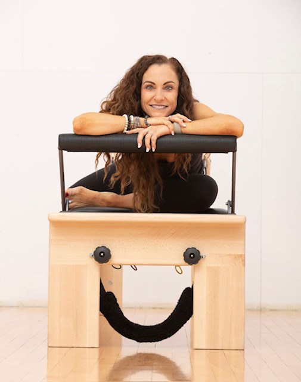
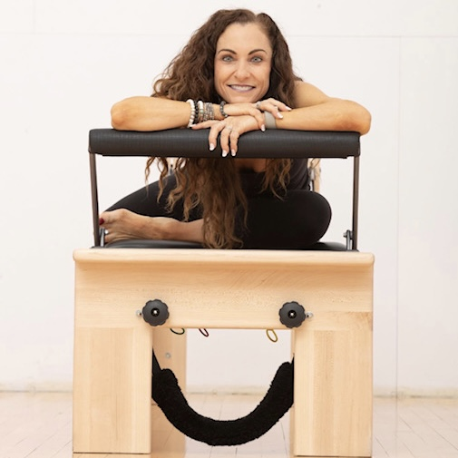
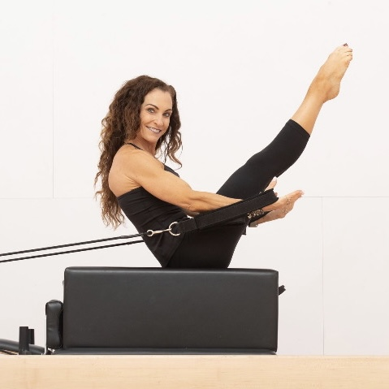

Home
  Hi! I'm Bonnie Rich. I'm here to help you find your balance of strength, stability, flexibility and a massive life force that you carry with you for the rest of your life. I work with individuals who want to maximize their potential of feeling spectacular and moving with intention, integrity, grace and ease. Feeling great in your body and how you treat it is a huge indicator of life happiness and satisfaction. As a lifelong and professional ballerina I have been very intentional about my discipline and work ethic when it comes to treating my instrument with the utmost care and respect. I help people find that ongoing desire to find their best life habits and practices to maximize their joy and energy, without sacrificing the fun or the balance of enjoying your downtime!
I believe that with proper body mechanics, knowing how to initiate movement from the core and understanding and applying the pilates principles (concentration, control, finding your center, fluidity, precision and breathing) you can take your health and wellness to the highest level, and do it with style and grace.
Client Testimonials